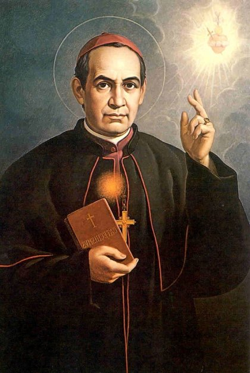

SANTO
ANTONIO MARIA CLARET

ORADOR ELOQUENTE E CULTO, QUE COMOVEU MULTID�ES IMENSAS COM SUAS PREGA��ES E HOMILIAS. FUNDADOR DA CONGREGA��O DOS FILHOS DO IMACULADO CORA��O DE MARIA (CLARETIANOS).
�NDICE
 - PREL�DIO
- PREL�DIO
 -
QUASE JESU�TA - UM MISSION�RIO
-
QUASE JESU�TA - UM MISSION�RIO
 -
A CONGREGA��O - ARCEBISPO DE CUBA
-
A CONGREGA��O - ARCEBISPO DE CUBA